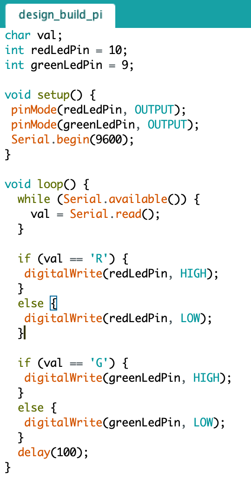
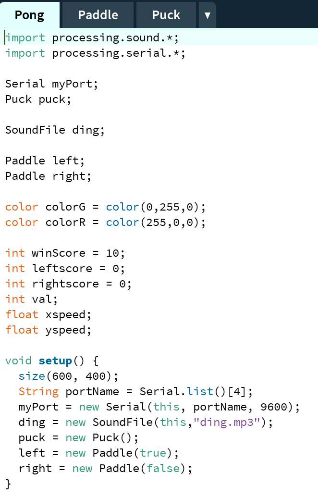
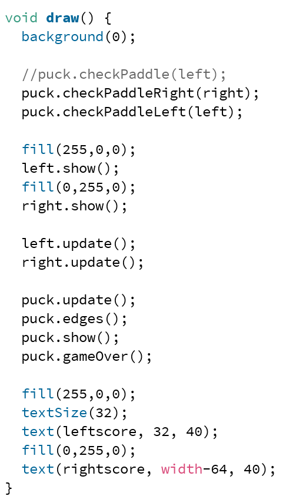
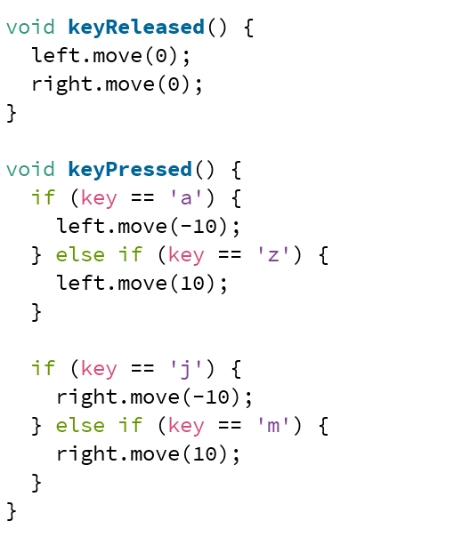
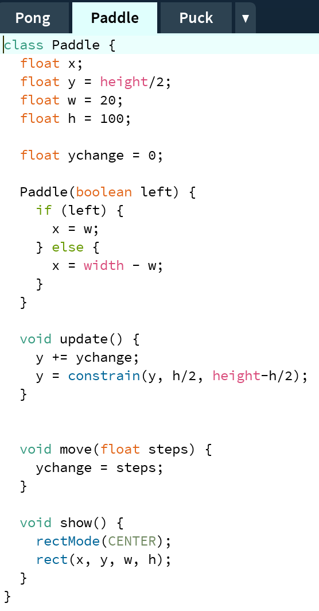
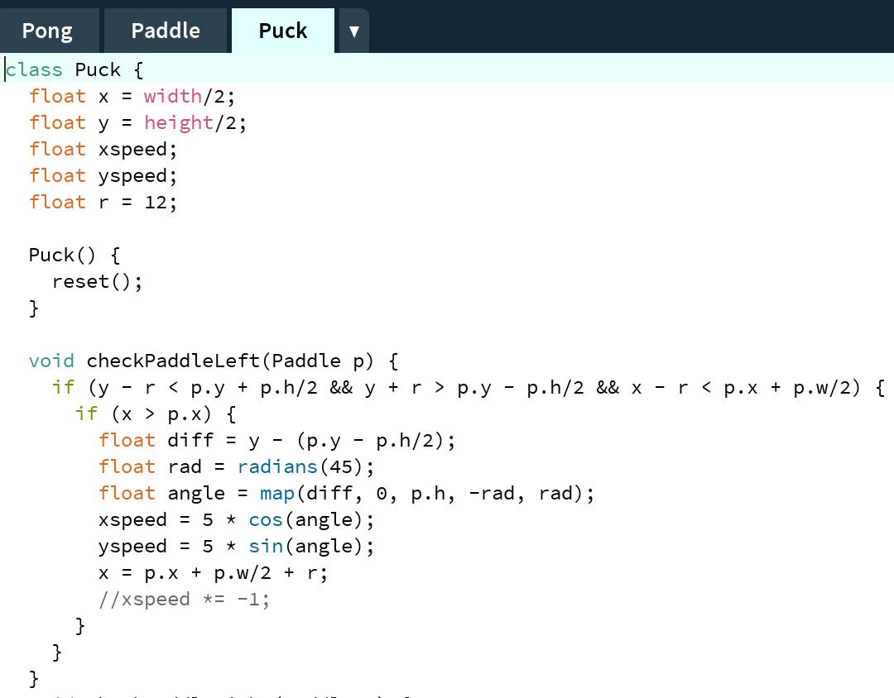
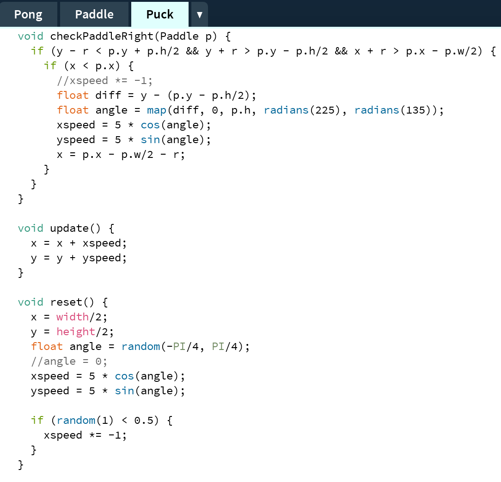
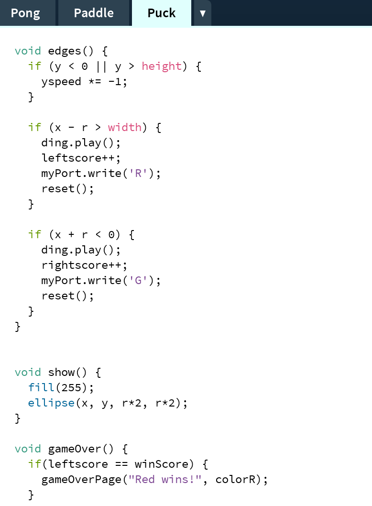
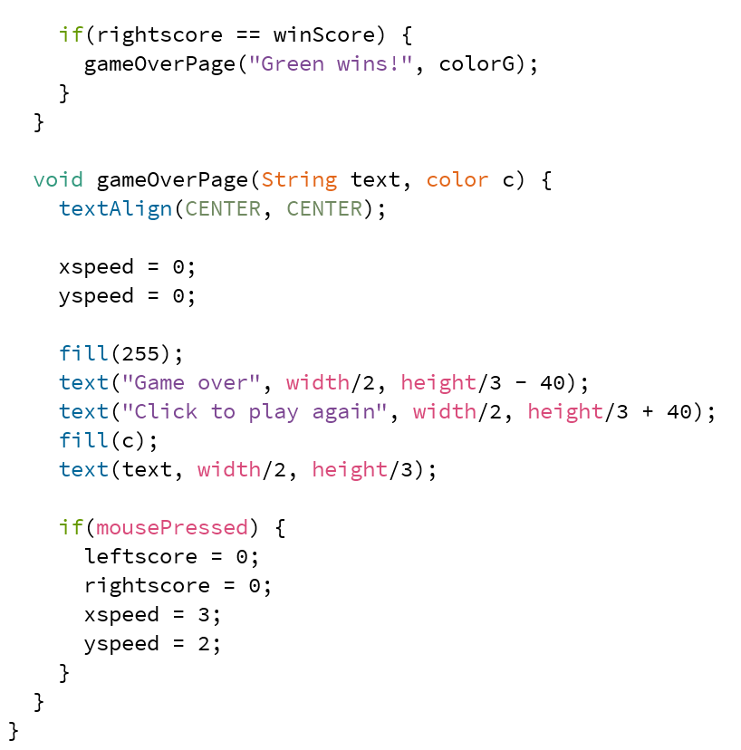

PLAYFUL INTERACTION
CHALLENGE
DESIGN & BUILD
Voor het design & build gedeelte van de challenge heb ik LED PONG gemaakt. LED PONG is Pong met LED lichtjes. als rood scoort brandt het rode lampje en als groen scoort brandt het groene lampje. Meer hierover is terug te zien in de showcase video.
Proces
Ik ben vergeten foto's te maken van de setup, maar ik heb gebruik gemaakt van 2 LED lampjes, verschillende Jumper Wires en resistors. In de video hieronder wordt getoond hoe het eruit ziet als er gespeeld wordt en hoe het spel werkt.
Code
        
Showcase video